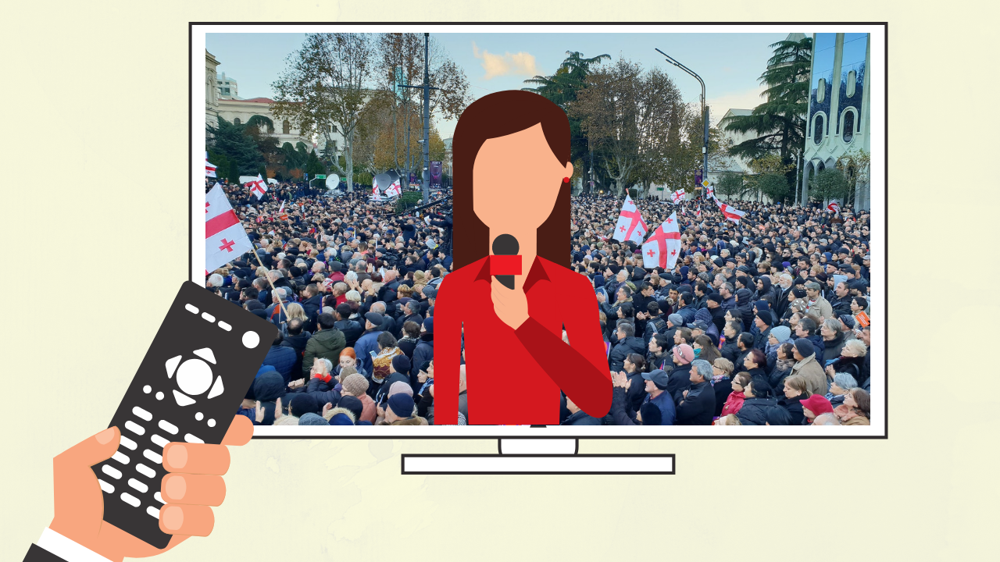
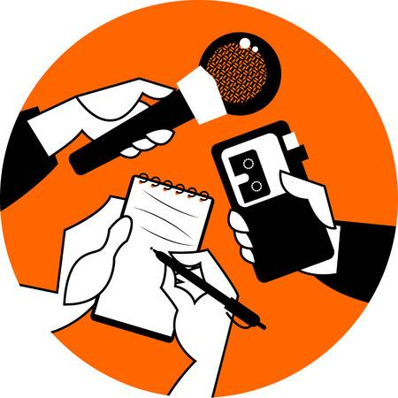

ჩემი პორთფოლიო
ჟურნალისტიკა

ვინ არის ჟურნალისტი?
ჟურნალისტი არის პირი, რომელიც აგროვებს, ქმნის, არედაქტირებს ან ამზადებს მასალებს მასობრივი ინფორმაციის საშუალებებში გამოსაქვეყნებლად და აქვს სათანადო რწმუნება ან არის ჟურნალისტთა რეგისტრირებული კავშირის წევრი.
როგორი უნდა იყოს ჟურნალისტი?
ჟურნალისტი უნდა იყოს თავშეკავებული და კარგად ინფორმირებული, მის მიერ გადმოცემული მასალა კი ინფორმაციული და ამომწურავი. ფაქტები და შეხედულებები დაბალანსებულად უნდა გაშუქდეს. ყოველი მხარისა და პირის აზრი მიუკერძოებლად უნდა გადმოიცეს.
სპორტული ჟურნალისტიკა
სპორტული ჟურნალისტიკა სპორტული თემების და მოვლენების გაშუქების, მისი ვიზუალიზაციის წარმოჩენის ან წერითი ფორმით გადმოცემის უმთავარესი საშუალებაა. ტრადიციულად, ჟურნალისტიკის ეს ფორმა უფრო გასართობად განიხილებოდა, ვიდრე სიახლეების გადაცემის საშუალებად, თუმცა დროთა განმავლობაში მისი აღქმა შეიცვალა და დღეს იგი ჟურნალისტიკის ფორმათა იერარქიაში ერთ-ერთ მნიშვნელოვან ადგილს იკავებს
